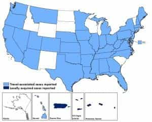

Michael is the author of Staying Married in a Degenerate Age. Follow him on Twitter or Facebook. You can read more of his writing at Honor and Daring.


An alarming new strain of the Zika virus is spreading through the Western hemisphere, yet the US government has not announced quarantines or travel bans. What’s behind the recent lackadaisical approach to combating infectious disease?

The Zika virus is not new. It was first isolated in 1947 during an outbreak in the Zika Forest of Uganda. It is spread primarily by daytime mosquitos A. aegypti and A. albopictus, but it can also be passed through contact with blood and through sex.
The virus spread across the Pacific in 2013. Since then it has spread to Central America, the Caribbean, and South America, where it has reached pandemic levels.
In the past, the Zika virus has not been much of a concern because it usually causes only mild symptoms. At its worst, it resembles Dengue fever which results in a high fever, vomiting, and aches and pains. But the outbreak in Central and South America is showing a monstrous and heartbreaking side effect: the Zika virus appears to be causing microcephaly and brain damage in infants of infected mothers.
The situation is so bad that some Central and South American governments have recommended that women avoid getting pregnant until more is known about the risks that are involved. For instance, does the Zika virus only affect the infants of women who become infected while they are pregnant, or does the the virus persist and pose a danger to infants even later in life?

Even though the Zika virus could potentially affect millions of American women who are planning to have children, the US is doing very little to address the threat. The CDC has issued an advisory to pregnant women traveling to Zika infested countries and provided them with this extremely helpful genius advice:
Don’t let mosquitoes bite you.
No vaccine currently exists. The National Institutes of Health hopes to have an experimental vaccine by the end of this year, but it would need to be tested before it could be given to the populace as a whole. In other words, we could be years away from a safe, generally available vaccine.
Some localities are taking steps to curb the mosquito population. Over the next three years, New York City will deploy additional mosquito traps and make a better effort to prevent sitting water from serving as incubators for Zika-bearing mosquitos.
One big thing that the US has not done is put any travel restrictions or quarantines into place to prevent the disease from becoming an epidemic in the US. So far, there have been 358 cases of Zika virus in the US. All of these cases have been the result of travel to the US from a Zika infested region. The Centers for Disease Control proudly point to this number to show that the virus is not rampant in the US—at least not yet.
The CDC is also warning us to avoid getting bitten by mosquitos this summer. The underlying assumption is that at some point, American mosquitos will eventually bite a Zika-infected individual who traveled from Central or South America. Once that happens, it is possible that Zika will become a pandemic in North America just like it is in South America.
1930 photo of immigrant with a communicable disease who was quarantined prior to being allowed into the US.
The US did not always have such a relaxed approach to infectious disease that threatened the health of Americans.
— In 1808, Boston imposed a mandatory three-day quarantine on all ships arriving from the Caribbean and Mediterranean to prevent the spread of tropical disease in the US.
— After a cholera epidemic in Britain killed 30,000 people in 1832, New York passed a law that prevented ships from approaching within 300 feet of the shore when the captain knew or suspected that cholera was aboard.
— In 1866, a ship arriving from into New York from Liverpool was found to have passengers who were infected with cholera. The ship was immediately placed under strict quarantine.
— An Asiatic cholera epidemic in 1892 caused President Benjamin Harrison to place a mandatory 20-day quarantine on any vessel that was carrying immigrants.
— The bubonic plague death of the Chinese owner of lumberyard in 1900 led to the City of San Francisco rope off 15 blocks of Chinatown that led to the closure of many businesses.
— A polio outbreak in 1916 caused New York to take children away from their parents and place them in quarantine.
— During World War I, the US incarcerated 30,000 prostitutes to prevent the spread of venereal disease.
— During the 1980s, Ronald Reagan banned people with HIV/AIDS from immigrating into the US. The ban remained in place until it was removed by President Obama.
In retrospect, some of these measures appear to be overkill but at the time they were prudent given the known facts. For example, when President Reagan banned immigrants with AIDS, scientists didn’t know exactly how the disease was communicated. Since HIV was detected in saliva, there were fears that casual contact, such as kissing, could spread the disease. Later, it became clear that HIV is mostly spread through sex and the sharing of needles.
On the other hand, there is no question that some of these quarantines saved lives. This is especially the case with the cholera epidemics. The point is that when it came to saving the lives of Americans, the government used to act in favor of saving lives even when it meant seriously inconveniencing a smaller group.

From recent epidemics, it has become clear that the US government is now taking a different approach.
Starting in 2013, West Africa saw the largest outbreak of the deadly Ebola virus on record. The outbreak started in Guinea and quickly spread to neighboring Sierra Leone and Liberia. The World Health Organization stated:
The Ebola epidemic ravaging parts of West Africa is the most severe acute public health emergency seen in modern times. Never before in recorded history has a biosafety level 4 pathogen infected so many people so quickly, over such a broad geographical area, for so long.
In response, the governments of several African nations banned all travel from the infected countries. After all, epidemic was still limited to those three countries and was still containable through travel bans. Yet the US government steadfastly refused to take any measures to prevent Ebola from entering the US.
When CDC director Dr. Thomas Frieden was asked why the US did not impose a travel ban, he said that a travel ban would have prevented the infected areas from receiving medical help. But surely the government could have exempted medical personal from the ban. Several other health experts hinted that the real reason for refusing to impose a travel ban was political correctness: it would have made the people of those West African nations feel bad.
In hindsight, Frieden’s gamble paid off. Although some infected Ebola patients did make their way to the US, the disease never spread beyond a handful of people. But it could have just as easily have gone the other way. One has to wonder if it was worth endangering thousands of Americans just so that the people of Sierra Leone could have higher self-esteem.
If you have any doubts that the US is letting political expediency dictate our policy when it comes to dealing with infectious disease, check out Jonathan Katz’s article on the Haiti cholera outbreak, which has killed almost 10,000 people. Katz alleges that the CDC knew all along that the source of the cholera came from a UN peacekeeping force from Nepal that was defecating in Haiti’s main river, but that they covered it up because it cast the United Nations in a bad light.
In the end, it may not just be political correctness that is driving US policy. It may be that our ruling elite are so committed to the agenda of creating “diversity” in the US and Europe that not even the prospect of a pandemic will be allowed to slow it down. In fact, the elite may even welcome a pandemic as lowering the earth’s carbon footprint—as long as it does not include them, of course.
Read More: Ebola Volunteers Nancy Writebol And Ken Brantly Are Cowards